你好：
首先感谢你使用这份笔记手册，本学习笔记是我在自学过程（网课视频在下方链接）中的随手笔记，可能出现遗漏，顺序错误或语法，单词等错误，你可以在自己的学习过程中对这份笔记更正即可。
说明： 本笔记为本人学习过程中随手写的笔记，为复习使用，笔记中可能存在遗漏或错误，具体请以官方文档和权威书籍为准！谢谢！ 笔记中的一些图片等元素因路径配置问题，可能会发生丢失。 笔记中展示的知识点仅为部分内容，完整内容请查阅官方开发文档内容！
网课资料：黑马程序员SpringCloud微服务开发与实战，java黑马商城项目微服务实战开发（涵盖MybatisPlus、Docker、MQ、ES、Redis高级等）哔哩哔哩bilibili
一个工程对应一个归档包(war)，这个war包 包含了该工程的所有功能。我们成为这种应用为单体应用，也就是我们常说的单体架构。具体描述: 就是在我们的一个war包种，聚集了各种功能以及资源，比如JSP,JS,CSS等。
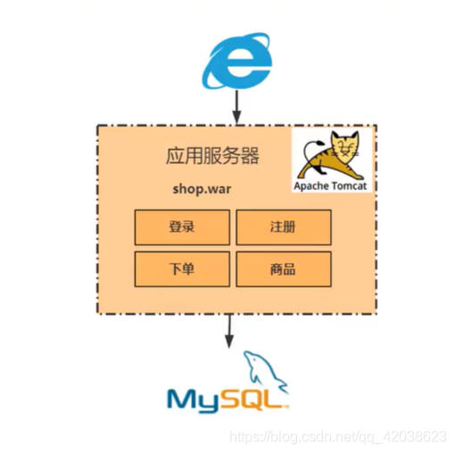
单体架构的优缺点
xxxxxxxxxx2.1 优点1. 架构简单明了，所有功能都是基于内部调用，不涉及跨域跨进程调用。2. 开发、测试、部署简单2.2 缺点1. 会有单点故障的问题（如果该服务器挂掉了，就无法请求）2. 随着业务扩展，代码越来越复杂，代码质量参差不齐，会让你每次提交代码 ，修改每一个小bug都是心惊胆战的。3. 部署慢(由于单体架构，功能复杂)代码量大了，部署就超级慢4. 扩展成本高（只能考虑从硬件上扩展）
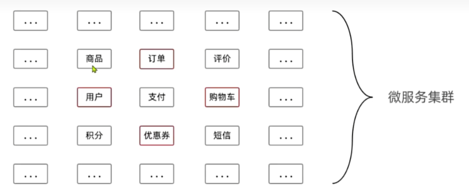
微服务架构是一个架构风格, 提倡
将一个单一应用程序开发为一组小型服务.
每个服务运行在自己的进程中
服务之间通过轻量级的通信机制(http rest api)
每个服务都能够独立的部署
每个服务甚至可以拥有自己的数据库
微服务以及微服务架构的是二个完全不同的概念。 微服务强调的是服务的大小和对外提供的单一功能，而微服务架构是指把 一个一个的微服务组合管理起来，对外提供一套完整的服务。
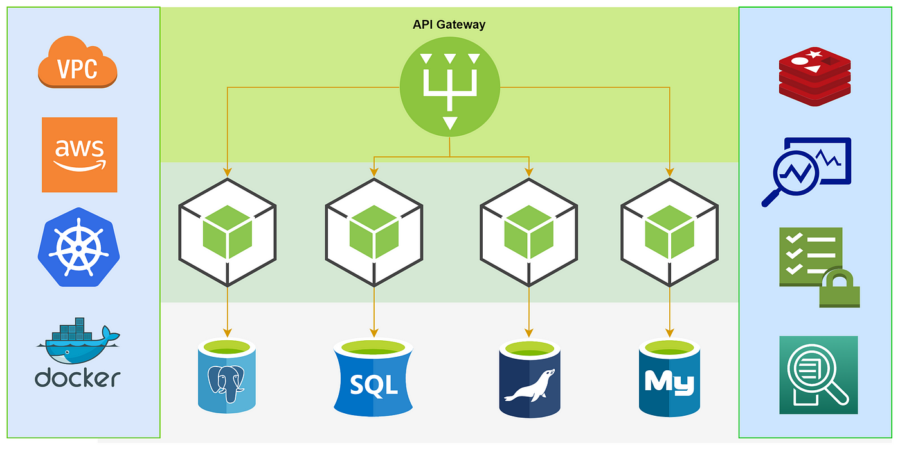
微服务的优缺点
xxxxxxxxxx优点1：每个服务足够小,足够内聚，代码更加容易理解,专注一个业务功能点(对比传统应用，可能改几行代码 需要了解整个系统)2: 开发简单，一个服务只干一个事情。（假如你做支付服务，你只要了解支付相关代码就可以了）3: 微服务能够被2-5个人的小团队开发，提高效率4: 按需伸缩5: 前后端分离, 作为java开发人员，我们只要关系后端接口的安全性以及性能，不要去关注页面的人机交互(H5工程师)根据前后端接口协议，根据入参，返回json的回参6:一个服务可用拥有自己的数据库。也可以多个服务连接同一个数据库.缺点:1:增加了运维人员的工作量，以前只要部署一个war包，现在可能需要部署成百上千个war包 (k8s+docker+jenkis )2: 服务之间相互调用，增加通信成本3:数据一致性问题(分布式事物问题)4:系能监控等,问题定位等等
微服务的适用场景
微服务架构适用于需要快速迭代、灵活扩展和高可用性的场景。比如：
电商平台：购物车、订单、库存、支付、物流等可以作为独立的服务，分别由不同的开发团队开发和维护。
社交网络：好友关系、消息、动态、搜索等可以作为独立的服务，分别由不同的开发团队开发和维护。
金融交易：交易、清算、风控、结算等可以作为独立的服务，分别由不同的开发团队开发和维护。
1. 架构
单体架构：单体应用程序是一个单个、独立的部署单元，其中所有功能都打包在一个可执行文件中。
微服务架构：微服务应用程序由一系列松散耦合、独立部署的小型服务组成，每个服务负责特定功能。
2. 部署
单体架构：单体应用程序作为一个整体部署，因此任何更改都要求重新部署整个应用程序。
微服务架构：微服务可以独立部署，因此可以逐个更新和替换，而不会影响其他微服务。
3. 扩展
单体架构：扩展单体应用程序可能很复杂，因为它需要重新部署和重新配置整个应用程序。
微服务架构：扩展微服务架构更容易，因为可以独立扩展每个微服务。
4. 可维护性
单体架构：维护单体应用程序可能很困难，因为所有功能都耦合在一起。
微服务架构：微服务架构提高了可维护性，因为每个微服务都可以独立地进行维护和更新。
5. 弹性
单体架构：单体应用程序中的任何故障都可能导致整个应用程序宕机。
微服务架构：微服务架构更具弹性，因为一个微服务中的故障不会影响其他微服务。
6. 可伸缩性
单体架构：单体应用程序通常难以水平扩展，因为所有功能都耦合在一起。
微服务架构：微服务架构允许轻松地水平扩展，因为每个微服务可以独立地进行扩展。
7. 开发
单体架构：单体应用程序通常由单个团队开发，这可能会导致代码库变得庞大且难以管理。
微服务架构：微服务架构允许不同的团队并行开发和维护不同的微服务，从而提高了开发效率。
适合的场景
单体架构：适合小型、简单的应用程序，这些应用程序的功能紧密耦合，不需要频繁更改。
微服务架构：适合大型、复杂的应用程序，这些应用程序的功能松散耦合，需要频繁更改和独立扩展。
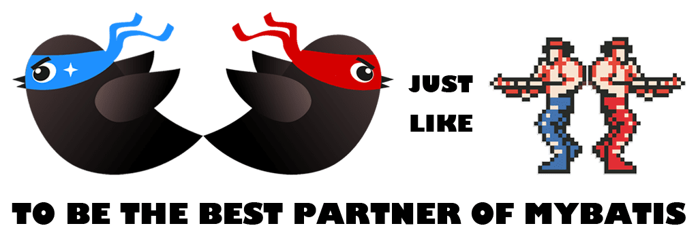
无侵入：只做增强不做改变，引入它不会对现有工程产生影响，如丝般顺滑
损耗小：启动即会自动注入基本 CURD，性能基本无损耗，直接面向对象操作
强大的 CRUD 操作：内置通用 Mapper、通用 Service，仅仅通过少量配置即可实现单表大部分 CRUD 操作，更有强大的条件构造器，满足各类使用需求
支持 Lambda 形式调用：通过 Lambda 表达式，方便的编写各类查询条件，无需再担心字段写错
支持主键自动生成：支持多达 4 种主键策略（内含分布式唯一 ID 生成器 - Sequence），可自由配置，完美解决主键问题
支持 ActiveRecord 模式：支持 ActiveRecord 形式调用，实体类只需继承 Model 类即可进行强大的 CRUD 操作
支持自定义全局通用操作：支持全局通用方法注入（ Write once, use anywhere ）
内置代码生成器：采用代码或者 Maven 插件可快速生成 Mapper 、 Model 、 Service 、 Controller 层代码，支持模板引擎，更有超多自定义配置等您来使用
内置分页插件：基于 MyBatis 物理分页，开发者无需关心具体操作，配置好插件之后，写分页等同于普通 List 查询
分页插件支持多种数据库：支持 MySQL、MariaDB、Oracle、DB2、H2、HSQL、SQLite、Postgre、SQLServer 等多种数据库
内置性能分析插件：可输出 SQL 语句以及其执行时间，建议开发测试时启用该功能，能快速揪出慢查询
内置全局拦截插件：提供全表 delete 、 update 操作智能分析阻断，也可自定义拦截规则，预防误操作
改造基于mybatis编写的接口，改造为mybatisPlus 改造前代码：
xxxxxxxxxxpublic interface UserMapper extends BaseMapper<User> {void saveUser(User user);void deleteUser(Long id);void updateUser(User user);User queryUserById(@Param("id") Long id);List<User> queryUserByIds(@Param("ids") List<Long> ids);}
xxxxxxxxxxpackage com.itheima.mp.mapper;import com.itheima.mp.domain.po.User;import org.junit.jupiter.api.Test;import org.springframework.beans.factory.annotation.Autowired;import org.springframework.boot.test.context.SpringBootTest;import java.time.LocalDateTime;import java.util.List;@SpringBootTestclass UserMapperTest {@Autowiredprivate UserMapper userMapper;@Testvoid testInsert() {User user = new User();user.setId(5L);user.setUsername("Lucy");user.setPassword("123");user.setPhone("18688990011");user.setBalance(200);user.setInfo("{\"age\": 24, \"intro\": \"英文老师\", \"gender\": \"female\"}");user.setCreateTime(LocalDateTime.now());user.setUpdateTime(LocalDateTime.now());userMapper.saveUser(user);}@Testvoid testSelectById() {User user = userMapper.queryUserById(5L);System.out.println("user = " + user);}@Testvoid testQueryByIds() {List<User> users = userMapper.queryUserByIds(List.of(1L, 2L, 3L, 4L));users.forEach(System.out::println);}@Testvoid testUpdateById() {User user = new User();user.setId(5L);user.setBalance(20000);userMapper.updateUser(user);}@Testvoid testDeleteUser() {userMapper.deleteUser(5L);}}
引入mybatisPlus起步依赖： MyBatisPlus官方提供了starter，其中集成了Mybatis和MybatisPlus的所有功能，并且实现了自动装配效果。 因此我们可以用MybatisPlus的starter代替Mybatis的starter：
xxxxxxxxxx<dependency><groupId>com.baomidou</groupId><artifactId>mybatis-plus-boot-starter</artifactId><version>3.5.12</version></dependency>
定义Mapper: 自定义的Mapper继承MybatisPlus提供的BaseMapper接口：
xxxxxxxxxxpublic interface UserMapper extends BaseMapper<User>{}
xxxxxxxxxxpackage com.itheima.mp.mapper;import com.baomidou.mybatisplus.core.mapper.BaseMapper;import com.itheima.mp.domain.po.User;import org.apache.ibatis.annotations.Param;import java.util.List;public interface UserMapper extends BaseMapper<User> {}
调用接口方法，实现增删改查
xxxxxxxxxxpackage com.itheima.mp.mapper;import com.itheima.mp.domain.po.User;import org.junit.jupiter.api.Test;import org.springframework.beans.factory.annotation.Autowired;import org.springframework.boot.test.context.SpringBootTest;import java.time.LocalDateTime;import java.util.List;@SpringBootTestclass UserMapperTest {@Autowiredprivate UserMapper userMapper;@Testvoid testInsert() {User user = new User();user.setId(5L);user.setUsername("Lucy");user.setPassword("123");user.setPhone("18688990011");user.setBalance(200);user.setInfo("{\"age\": 24, \"intro\": \"英文老师\", \"gender\": \"female\"}");user.setCreateTime(LocalDateTime.now());user.setUpdateTime(LocalDateTime.now());userMapper.insert(user);}@Testvoid testSelectById() {User user = userMapper.selectById(5L);System.out.println("user = " + user);}@Testvoid testQueryByIds() {List<User> users = userMapper.selectByIds(List.of(1L, 2L, 3L, 4L));users.forEach(System.out::println);}@Testvoid testUpdateById() {User user = new User();user.setId(5L);user.setBalance(20000);userMapper.updateById(user);}@Testvoid testDeleteUser() {userMapper.deleteById(5L);}}
测试全部通过
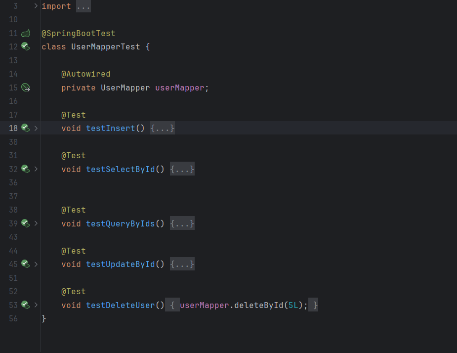
MyBatisPlus通过扫描实体类，并基于反射获取实体类信息作为数据库表信息。如果实体类名自动转换后与数据库表字段不匹配，可以使用以下注解进行配置
MybatisPlus中比较常用的几个注解如下： @TableName：用来指定表名 @Tableld：用来指定表中的主键字段信息 @TableField：用来指定表中的普通字段信息
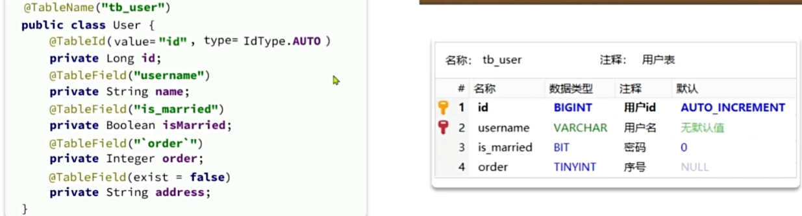
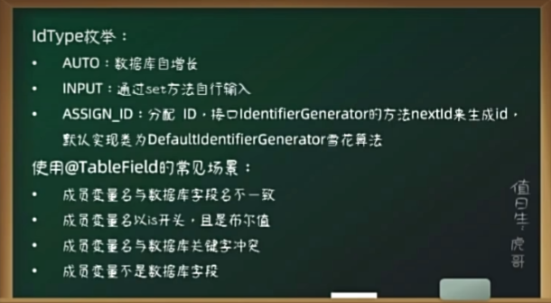
全部注解配置介绍： 注解配置 | MyBatis-Plus
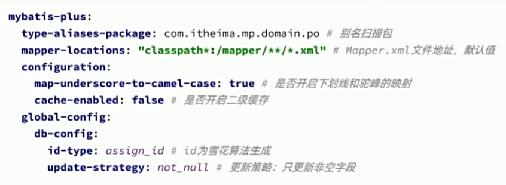
MyBatisPlus使用的基本流程是什么？
引入起步依赖
自定义Mapper基础BaseMapper
在实体类上添加注解声明表信息
在application.yml中根据需要添加配置
MyBatisPlus支持各种复杂的where条件，可以满足日常开发的所有需求
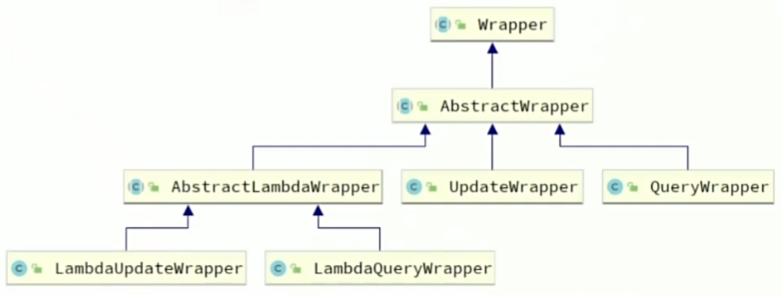
案例：基于QueryWrapper的查询
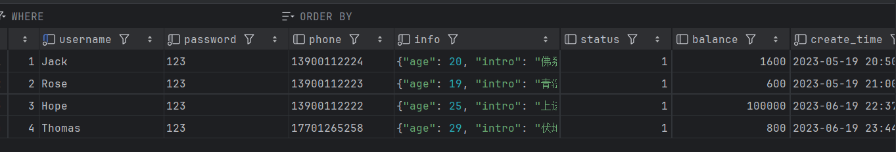
需求：
查询出名字中带o的，存款大于等于1ooo元的人的id、username、info、balance字段
xxxxxxxxxxvoid testQueryWrapper() { // 1 构建wapper对象 QueryWrapper<User> wrapper = new QueryWrapper<>(); wrapper.select("id,username,info,balance").like("username","o").ge("balance",1000);
// 2查询 List<User> datas = userMapper.selectList(wrapper); System.out.println(datas.toString());}
更新用户名为jack的用户的余额为2000
xxxxxxxxxxvoid testQueryWrapper2() { // 1. 准备更新数据 User user = new User(); user.setBalance(2000); // 2 构建wapper对象 QueryWrapper<User> wrapper = new QueryWrapper<>(); wrapper.eq("username","jack");
// 3 执行更新 int datas = userMapper.update(user,wrapper); System.out.println(datas);}
案例：基于UpdateWrapper的更新
需求：更新id为1,2,4的用户的余额，扣200
xxxxxxxxxxvoid testUpdateWrapper() { List<Long> ID = List.of(1L,2L,4L);
// 构建wrapper对象 UpdateWrapper<User> wrapper = new UpdateWrapper<>(); wrapper.setSql("balance=balance-200").in("id",ID); // 执行更新 userMapper.update(wrapper);
}条件构造器的用法：
QueryWrapper和LambdaQueryWrapper通常用来构建select、delete、update的where条件部分
UpdateWrapper和LambdaUpdateWrapper通常只有在set语句比较特殊才使用
尽量使用LambdaQueryWrapper和LambdaUpdateWrapper，避免硬编码
我们可以利用MyBatisPlus的Wrapper来构建复杂的where条件，然后自己定义SQL语句中剩下的部分。
Mybatis-Plus（以下简称MBP）的初衷是为了简化开发，而不建议开发者自己写SQL语句的；但是有时客户需求比较复杂，仅使用MBP提供的Service，Mapper与Wrapper进行组合，难以实现可以需求； 这时我们就要用到自定义的SQL了。
自定义SQL使用步骤：
基于wrapper构建where条件
xxxxxxxxxx void testCustomSQL() { // 1.更新条件 List<Long> ID = List.of(1L,2L,4L); int ac = 200;
// 2。定义条件 UpdateWrapper<User> wrapper = new UpdateWrapper<>(); wrapper.in("id",ID); // 执行更新 userMapper.upBalanceById(wrapper,ac);
}
在mapper方法参数中用Param注解声明wrapper变量名称，必须是ew
xxxxxxxxxxpublic interface UserMapper extends BaseMapper<User> { void upBalanceById((Constants.WRAPPER) UpdateWrapper<User> wrapper,("ac") int ac);
自定义SQL，并使用wrapper条件
xxxxxxxxxx <mapper namespace="com.itheima.mp.mapper.UserMapper">
<update id="upBalanceById"> UPDATE USER SET BALANCE = balance-${ac} ${ew.customSqlSegment} </update>
</mapper>
需求：将id在指定范围的用户（例如1、2、4）的余额扣减指定值
xxxxxxxxxx
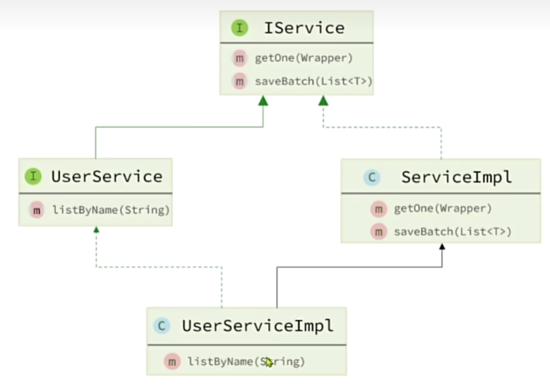
Service接口的使用方法
自定义Service接口继承IService接口
xxxxxxxxxx// 接口package com.itheima.mp.service;
import com.baomidou.mybatisplus.extension.service.IService;import com.itheima.mp.domain.po.User;
public interface iUserService extends IService<User> {}
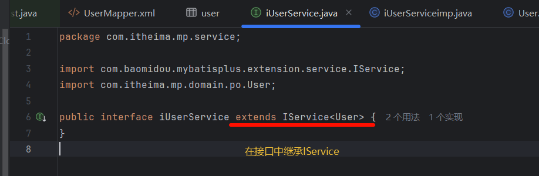
自定义Service实现类，实现自定义接口并继承Servicelmpl类
xxxxxxxxxx// 实现类package com.itheima.mp.service.imp;import com.baomidou.mybatisplus.extension.service.impl.ServiceImpl;import com.itheima.mp.domain.po.User;import com.itheima.mp.mapper.UserMapper;import com.itheima.mp.service.iUserService;@Service// 继承ServiceImpl，实现自定义的接口public class iUserServiceimp extends ServiceImpl<UserMapper, User> implements iUserService {}
测试
xxxxxxxxxxprivate iUserService iUserService;void testService() { User user = new User(); user.setUsername("zhangSir"); user.setPassword("123"); user.setPhone("18688990011"); user.setBalance(200); user.setInfo("{\"age\": 24, \"intro\": \"英文老师\", \"gender\": \"female\"}"); iUserService.save(user);
}
| 编号 | 接口 | 请求方式 | 请求路径 | 请求参数 | 返回值 |
|---|---|---|---|---|---|
| 1 | 新增用户 | POST | /users | 用户表单实体 | N/A |
| 2 | 删除用户 | DELETE | /users/{id} | 用户id | N/A |
| 3 | 根据id查询用户 | GET | /users/{id} | 用户id | 用户VO |
| 4 | 根据id批量查询 | GET | /users | 用户id集合 | 用户VO集合 |
| 5 | 根据id扣减余额 | PUT | /users/{id}/deduction/{money} | 用户id 扣减金额 | N/A |
引入依赖
xxxxxxxxxx<!--swagger--><dependency><groupId>com.github.xiaoymin</groupId><artifactId>knife4j-openapi2-spring-boot-starter</artifactId><version>4.1.0</version></dependency><!--web--><dependency><groupId>org.springframework.boot</groupId><artifactId>spring-boot-starter-web</artifactId></dependency>
swagger配置信息
xxxxxxxxxxknife4j:enable: trueopenapi:title: 用户管理接口文档description: "用户管理接口文档"email: zhanghuyi@itcast.cnconcat: 虎哥url: https://www.itcast.cnversion: v1.0.0group:default:group-name: defaultapi-rule: packageapi-rule-resources:- com.itheima.mp.controller
新增用户（1-4开发简单业务逻辑）
xxxxxxxxxx("新增用户接口")public void saveUser( UserFormDTO formDTO) { // 拷贝DTO到PO User user = BeanUtil.copyProperties(formDTO, User.class); // 新增 userService.save(user);
}
删除用户
xxxxxxxxxx("删除用户接口")("{id}")public void DeleteUserById(("用户ID") ("id") Long id) { // 删除 userService.removeById(id);}
根据id查询用户
xxxxxxxxxx("查询用户接口")("{id}")public UserVO QueryUserById(("用户ID") ("id") Long id) { // 查询 User user = userService.getById(id);
//拷贝并返回 return BeanUtil.copyProperties(user, UserVO.class);}
根据id批量查询
xxxxxxxxxx("批量查询用户接口")()public List<UserVO> QueryUserByIds(("用户ID") ("ids") List<Long> ids) { // 查询 List<User> user = userService.listByIds(ids);
//拷贝并返回 return BeanUtil.copyToList(user, UserVO.class);}
根据id扣减余额(开发复杂业务逻辑) Controller
xxxxxxxxxx("更新用户余额接口") ("/{id}/deduction/{money}") public void QueryUserByIds(("用户ID") ("id") Long id ,("money") int money) {
userService.updateMoney(id,money); }Service
xxxxxxxxxxpublic void updateMoney(Long id, int money) { // 查询 User user = getById(id); // 校验用户余额 if (user == null|| user.getStatus()==2) { throw new RuntimeException("失败！用户状态出现异常"); }
// 查询余额是否充足
if (user.getBalance()<money) { throw new RuntimeException("失败！用户余额不足");
}
// 减扣余额 baseMapper.updateMoney(id,money);
}Mapper
xxxxxxxxxxvoid updateMoney(("id") Long id,("money") int money);Mapper.XML
xxxxxxxxxx<update id="updateMoney"> update user set balance = balance-${money} where id=${id}</update>
测试接口：http://localhost:8080/doc.html
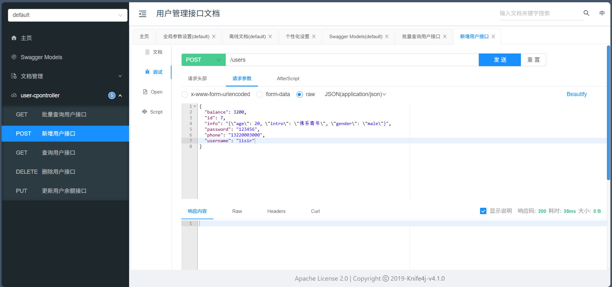
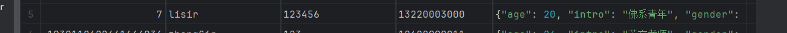
REST架构风格介绍：
REST（英文Representational State Transfer）是一种基于客户端和服务器的架构风格，用于构建可伸缩、可维护的Web服务。REST的核心思想是，将Web应用程序的功能作为资源来表示，使用统一的标识符（URI）来对这些资源进行操作，并通过HTTP协议（GET、POST、PUT、DELETE等）来定义对这些资源的操作。
例如，使用RESTful架构设计一个用户管理系统，可以使用以下URI和HTTP动词：
| 获取用户列表 | GET /users |
|---|---|
| 获取单个用户信息 | GET /users/{id} |
| 创建用户 | POST /users |
| 更新用户信息 | PUT /users/{id} |
| 删除用户 | DELETE /users/{id} |
REST架构风格是一种轻量级的Web服务设计模式，它不依赖于XML、SOAP等协议和标准。REST使用简单的HTTP请求和响应来实现资源之间的交互，这使得REST服务在跨平台和跨语言的Web服务中广泛使用。
REST采用无状态的客户端-服务器模型，并使用缓存来减少网络延迟和带宽消耗。REST服务通常使用JSON或其它轻量级的数据格式来交换数据。
案例1：IService的Lambda查询 需求：实现一个根据复杂条件查询用户的接口，查询条件如下：
name：用户名关键字，可以为空
status：用户状态，可以为空
minBalance：最小余额，可以为空
maxBalance：最大余额，可以为空
代码实现
xxxxxxxxxx// controller("筛选查询用户接口")("/list")public List<UserVO> QueryUser(UserQuery query) { // 查询 List<User> user = userService.queryUser(query);
//拷贝并返回 return BeanUtil.copyToList(user, UserVO.class);}xxxxxxxxxx// servicepublic List<User> queryUser(UserQuery query) {
List<User> list = lambdaQuery().like(query.getName() != null, User::getUsername, query.getName()) //模糊匹配name .eq(query.getStatus() != null, User::getStatus, query.getStatus()) // 匹配状态 .ge(query.getMaxBalance() != null, User::getBalance, query.getMinBalance()) // 大于最小值 .le(query.getMinBalance() != null, User::getBalance, query.getMaxBalance()) // 小于最大值 .list(); return list;
}
案例2：IService的Lambda更新
需求：改造根据id修改用户余额的接口，要求如下
完成对用户状态校验
完成对用户余额校验
如果扣减后余额为0，则将用户status修改为冻结状态（2）
代码实现
xxxxxxxxxx("更新用户余额和状态接口")("/{id}/deduction2/{money}")public void QueryUserByIds2(("用户ID") ("id") Long id ,("money") int money) {
userService.updateMoney2(id,money);}xxxxxxxxxx// servicepublic void updateMoney2(Long id, int money) { // 查询 User user = getById(id); // 校验用户余额 if (user == null|| user.getStatus()==2) { throw new RuntimeException("失败！用户状态出现异常"); }
// 查询余额是否充足
if (user.getBalance()<money) { throw new RuntimeException("失败！用户余额不足"); }
int nowBalance = user.getBalance()-money; // 减扣余额 lambdaUpdate().eq(User::getId, id) .set(User::getBalance, nowBalance) .set(nowBalance==0, User::getStatus, 2) .eq(User::getBalance, user.getBalance()) .update();}
案例3：IService的批量新增
需求：批量插入10万条用户数据，并作出对比：
普通for循环插入
xxxxxxxxxxvoid testFor100000() { LocalDateTime localDateTime = LocalDateTime.now(); for (int i = 0; i < 100000; i++) { User user = new User(); user.setUsername("User"+i); user.setPassword("123"); user.setPhone("18688990011"+i); user.setBalance(200); user.setInfo("{\"age\": 24, \"intro\": \"英文老师\", \"gender\": \"female\"}"); iUserService.save(user); } LocalDateTime localDateTime1 = LocalDateTime.now(); System.out.println("插入完成，耗时："+ Duration.between(localDateTime1, localDateTime));
}普通for循环插入10万条数据，耗时约2分钟，效率非常低
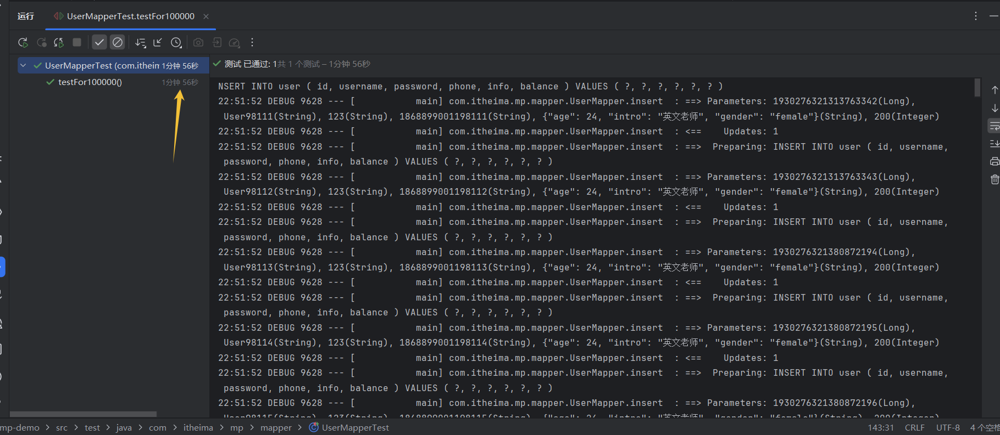
IService的批量插入
xxxxxxxxxxvoid testService100000() { // 每1000条数据向服务器提交一次 List<User> Users = new ArrayList<>(1000);
for (int i = 1; i <= 100000; i++) { if (i%1000==0){ iUserService.saveBatch(Users); Users.clear(); } User user = new User(); user.setUsername("User"+i); user.setPassword("123"); user.setPhone("18688990011"+i); user.setBalance(200); user.setInfo("{\"age\": 24, \"intro\": \"英文老师\", \"gender\": \"female\"}"); Users.add(user); }
System.out.println("插入完成");}测试时间10秒左右
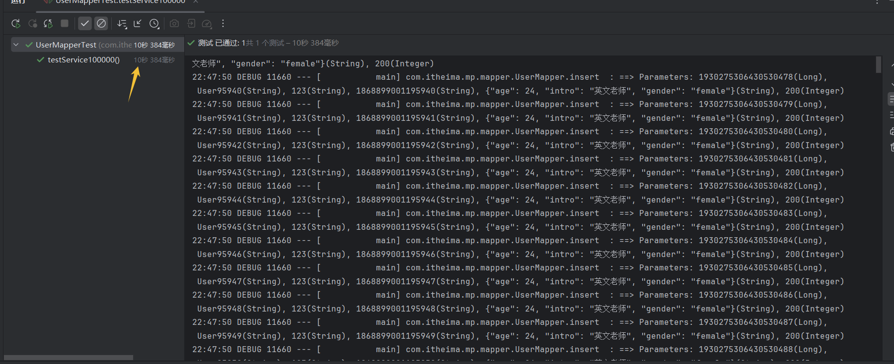
开启：rewriteBatchedStatements=true参数（Mysql参数）
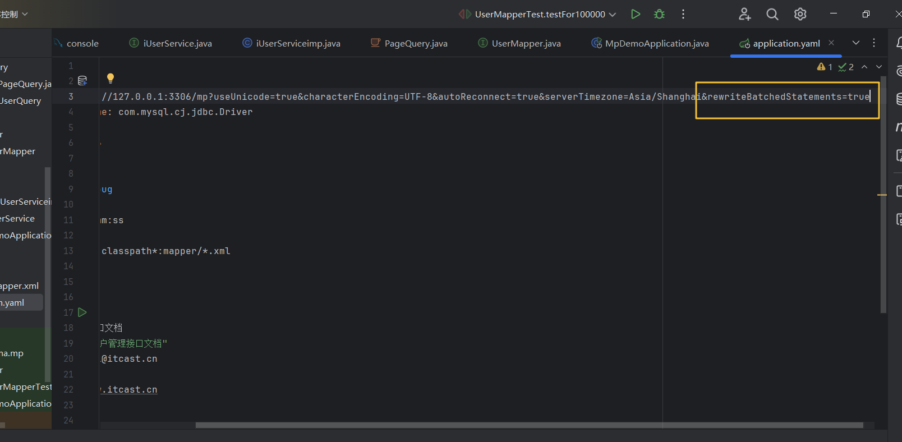
再次测试批量插入，测试结果为4秒左右，效率大大提高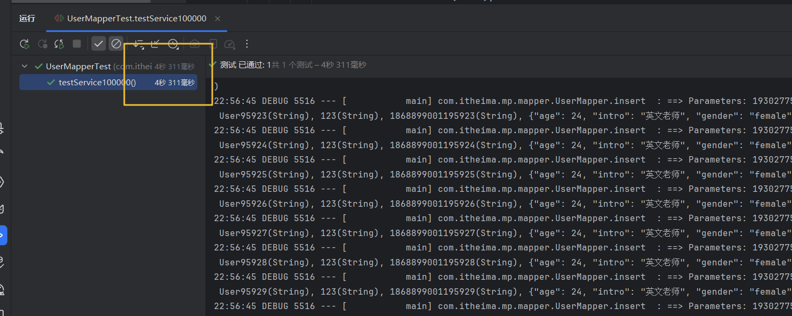
代码生成器
DB静态工具